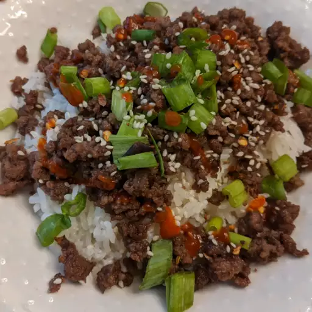

Korean Ground Beef Bowl

This is a quick and easy recipe for anybody on the go.
Ingredients
- 1 pound lean ground beef
- 5 cloves garlic, crushed
- 1 tablespoon freshly grated ginger
- 2 teaspoons toasted sesame oil
- 1/2 cup reduced-sodium soy sauce
- 1/3 cup brown sugar
- 1/4 teaspoon crushed red pepper
- 6 green onions, chopped, divided
- 4 cups hot cooked brown rice
- 1 tablespoon toasted sesame seeds
Instructions
- Heat a large skillet over medium-high heat. Add beef and cook for 5 to 7 minutes.
- Stir in garlic, ginger, and sesame oil and cook until fragrant, about 2 minutes.
- Stir in soy sauce, brown sugar, and red pepper. Cook for additional 5 minutes.
- Add 1/2 of chopped green onions.
- Serve over hot cooked rice; garnish with sesame seeds and green onions.
Go Back